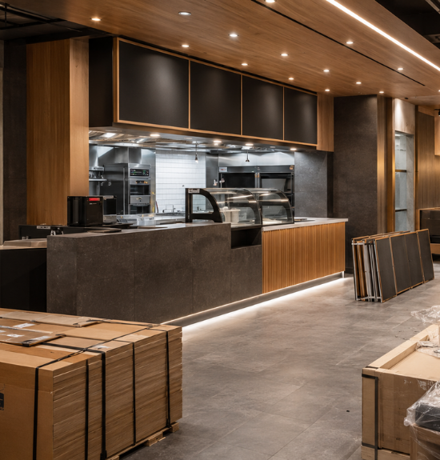
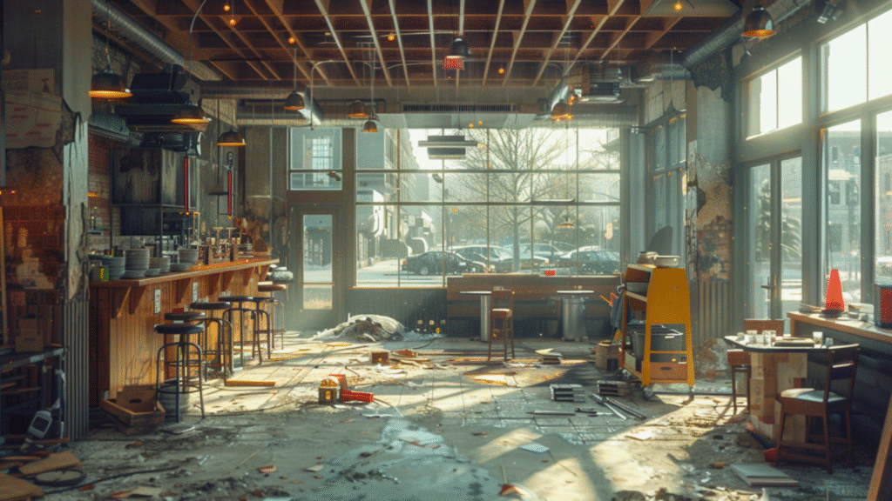
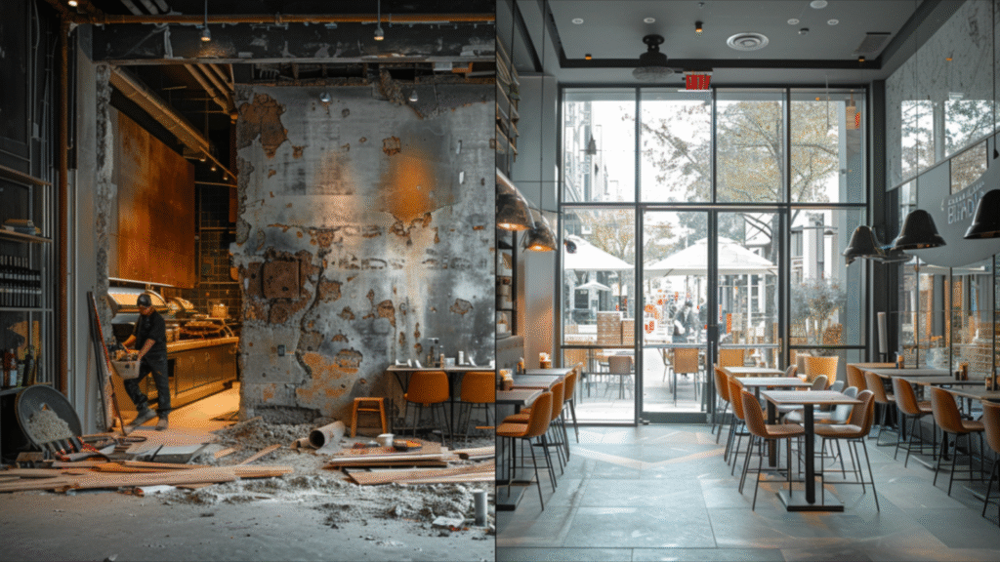
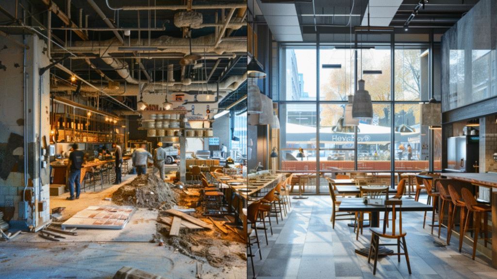

Leakages, Risks, and Missed Opportunities in Traditional Builds
Executive Summary
Choosing traditional construction over Flatpack’s modular, factory-built approach leads to significant financial, operational, and strategic leakages for restaurant owners. From delayed openings and inflated costs to inconsistent branding and material waste, this report highlights the risks of sticking with outdated methods.
Disclaimer: The cost estimates and timeframes provided in this report are illustrative examples based on industry trends. Actual numbers may vary depending on location, project scope, restaurant size, material costs, and construction complexities.
1. Financial Leakages

a. Higher Construction Costs
- Labor & Material Waste: Traditional builds require on-site customization, leading to 20–30% higher costs due to material overages, rework, and fragmented vendor pricing.
- Unexpected Expenses: Studies show that 78% of traditional projects exceed budgets due to delays, design changes, or contractor errors. Flatpack offers fixed pricing, reducing uncertainty.
- Lost Revenue: Delayed openings (3–6 months vs. ~30 days with Flatpack) mean losing potential revenue.
b. Inefficient Scaling
- Building multiple outlets with different vendors increases per-unit costs and causes inconsistencies.
- Flatpack reduces costs by 15–30% per outlet through bulk manufacturing, standardized designs, and reusable elements.
2. Operational Inefficiencies
a. Vendor Management Chaos
- Coordinating carpenters, electricians, painters, and fabricators leads to delays and miscommunication.
- 63% of restaurateurs report project delays due to vendor conflicts.
- Flatpack’s Single Point of Contact (SPOC) reduces project management time by 40%.
b. Slower Time-to-Market
- Every delayed day is an opportunity for competitors to capture market share.
- Traditional builds take 3–6 months; Flatpack cuts this to ~30 days.
3. Brand & Customer Experience Risks

a. Inconsistent Branding
- Different vendors across locations often result in mismatched furniture, lighting, and layouts.
- 72% of customers expect identical experiences at chain outlets.
b. Quality Control Issues
- Flatpack’s factory precision ensures 99% consistency.
- Human error in on-site construction can lead to uneven finishes, structural issues, or malfunctioning fixtures.
4. Sustainability & Waste
a. Environmental Impact
- Traditional construction wastes ~30% of materials (discarded wood, excess concrete, and other unused resources).
- Flatpack reduces material waste by 50–70% by using precision-cut components.
- Reputation Risk: Eco-conscious customers increasingly prefer sustainable brands.
b. Non-Reusable Investments
- Relocating a traditionally built restaurant requires demolition and rebuilding from scratch, generating significant waste.
- Flatpack elements are 80% reusable, allowing restaurateurs to relocate or refresh designs without unnecessary demolition costs.
5. Strategic Limitations

a. Inflexible Growth
- Expanding to multiple locations traditionally takes months per outlet.
- Flatpack enables rapid scaling—e.g., 10 outlets in 6 months vs. 2–3 years traditionally. (Timeframes may vary based on restaurant format and regulatory approvals.)
b. Lease Lock-Ins
- Restaurants often renew expensive leases to avoid costly rebuilds.
- Flatpack allows easy relocation, preserving negotiating power.
c. Inability to Refresh Designs
- Traditional remodeling is costly and disruptive.
- Flatpack enables seamless design updates—owners can swap elements like counters, lighting, or signage within days, without major downtime.
Quantifying the Leakages: Traditional vs. Flatpack
| Aspect | Traditional Build | Flatpack Advantage |
| Time to Open | 3-6 months | 50% faster revenue generation |
| Cost per Outlet | ₹50 lakh – ₹1.2 crore | Save up to ₹15-30 lakh |
| Relocation Cost | ~₹20 lakh (rebuild) | ~₹5 lakh (reassembly) |
| Waste per Project | 2-5 tons | 1 ton (mostly recyclable) |
Conclusion: The Cost of Inaction
Sticking with traditional construction isn’t just expensive—it’s a strategic liability. Restaurateurs lose revenue to delays, bleed cash through inefficiencies, and risk brand inconsistency.
Flatpack isn’t just about cutting costs—it’s about future-proofing your business in a competitive industry.
Final Question: Can your restaurant afford NOT to Flatpack?
Faster builds. Lower costs. Zero headaches. FlatPackCo’s modular solutions help you open restaurants 50% faster with precision and consistency.
Scale smarter and build better—let’s talk.